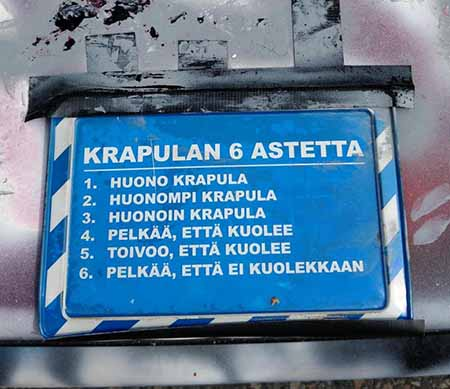

Majoitus
Ulkopaikkakuntalaiset YTP-osallistujat majoittuvat osoitteessa Ruiskatu 8. Majoituksessa ollessasi muistathan kunnioittaa tiloja sekä tiloissa olevia majoitusvalvojia. Roskat roskiin, tarpeet vain saniteettitiloihin ja desibelilevelit kohtuullisissa rajoissa. T.äiti
Aukioloajat:
- Keskiviikkona 17.10. klo 10-12 sekä uudelleen illalla klo 21 eteenpäin
- Torstaina 18.10. klo 11 saakka sekä uudelleen illlalla klo 21 eteenpäin
- Perjantaina 19.10 klo 11 saakka
HUOM! Majoituksen aukioloajat ovat edellämainitut eikä niistä poiketa, joten jos liityt tapahtumaan myöhemmin ja haluat majoitukseen tavaroitasi, kannattaa reput ja pussukat kuljetuttaa YTP-toverisi mukana Ruiskadulle. Ole myös tarkkana, että otat kaiken tarvitsemasi mukaan majoituksesta poistuessasi, ettei haalarin taskusta puuttuva kinnas tai pullonavaaja pääse lannistamaan YTP-tunnelmaa!
Majoitukseen takaisin pääsee kätevimmin käyttämällä YTP-osallistujille järjestettyjä busseja, jotka kulkevat yöllä keskustasta majoitukseen. Bussin lähtöpaikka keskustassa on *insert bussin lähtöpaikka*
Bussi lähtee liikkeelle tasatunnein klo 02, 03, 04 ja 05 tai kun se on täynnä!
Bussin lähtöpaikka Google MapsissaTaksitolpat
Ruokapaikat
Kuten jokainen kunnollinen isäntä, olemme mekin ottaneet huomioon majoituksen lisäksi YTP-osallistujien ravitsemustarpeet ja sopineet muutamasta vatsalaukkuja varmasti miellyttävästä diilistä!
Turkulainen opiskeljaravintolaketju Unica on luvannut tapahtuman kunniaksi tarjota turkulaisten all-time-favourite opiskelijaruokaa eli Kievin kanaa kahdessa ravintolassaan(?) keskiviikkona sekä torstaina, joten päiväsaikaan kannattaa suunnata tutustumaan tarkemmin tähän makuhermoja hivelevään ateriaan.
- →
Agoralla sijaitseva Galilei (lounas klo 14 saakka )
- →
Mäen juurella, Hämeenkadun vieressä sijaitseva Assarin ullakko (klo 20 saakka) Samoissa tiloissa myös kasvisruokaa tarjoava Brygge (klo 20 saakka)
- →
Lisäksi alle kilometrin päässä yliopistolta löytyy useita muitakin opiskelijaravintoloita, jotka löytyvät oheisesta linkistä päivän ruokalistoineen.
YTP-pitsukebutarjous!
Sanoiko joku pitsu? Kyllä! Sanoiko joku pitsua alennettuun hintaan? KYLLÄ! Turun keskustassa ovensa klo 16 avaava ravintola Aurora tarjoaa kaikille YTP-osallistujille annoksiaan alennettuun hintaan aina aamuviiteen saakka. Ravintolasta löytyy annoksia niin pitsakebuista salaatteihin, joten tätä tarjousta ei todellakaan kannata missata.
Aurora löytyy täältä!Turusta löytyy myös muita ravintoloita, joista paikalliset suosittelevat esimerkiksi seuraavia:
- →
Akateeminen Hesburger (avoinna ke ja to 10-02)
- →
Hesburger Kauppatori a.k.a. torihese (avoinna ke ja to 10-05)
- →
Legendaarinen Turun torikiinalainen (avoinna about aina, tai sit ei)
- →
Hämeenkadun Subway (avoinna 24/7)
- →
Woolshed (avoinna ke ja to 11-23)
- →
Morrisons (avoinna ke ja to 11-22)
- →
Hook (avoinna ke ja to 16-23)
- →
Kasvisravintola Keidas (avoinna ke ja to 11-21)
- →
Kaikki edellä listatut ravintolat kartalla
Alkot, kaupat & apteekit
Janottaako? Kolottaako viinahammasta? Tekivätkö kaljakoppa ja viinitonkka ennenaikaisen tyhjenemisen? Ei hätiä mitiä hyvä ystävä.
Turun Alkot palvelevat seuraavasti:
- →
Alko, K-Citymarket, lähinnä majoitusta (auki 9-21)
- →
Alko, kauppakeskus Wiklund, torin vieressä (auki 9-21)
- →
Alko, kauppakeskus Hansa, torin vieressä, viinipainotteinen valikoima (auki 9-21)
- →
Kaikki Alkot kartalla
Kauppoja juotavan ja purtavan metsästäjille:
- →
Lähimpänä majoitusta: Sale Petrelius (avoinna 8-21)
- →
Hämeenkadun Sale (auki 7-23)
- →
Hämeenkadun K-market Puhakka, panimo-oluita! (auki 6.30-22)
- →
Wiklundin S-market (avoinna 7-23)
- →
Keskustan Lidl (avoinna 7-21)
- →
Kaubat kätevästi kartalla
Apteekit:
Hätäpuhelin
Jos joku tarvitsee lääkäriä, soitathan yleiseen hätänumeroon 112.
Jos kyse on tapahtumaan liittyvästä kriisistä, meillä on käytössä tapahtuman ajan päivystävä puhelin akuuteille "hätä"tilanteille. Ethän soittele tähän numeroon ellei kyseessä ole tilanne, johon tarvitset järjestäjien välitöntä puuttumista. Järjestäjät tarvitsevat työrauhan.
Haluan majoitukseen
Majoitus on osoitteessa Ruiskatu 8. ÄLÄ PYÖRÄILE!
Pääset sinne takaisin helpoiten hyppäämällä klo 02-05 majoituksen ja keskustan väliä kulkevaan ATK-YTP-bussiin.
Bussi lähtee liikkeelle tasatunnein klo 02, 03, 04 ja 05 tai kun se on täynnä!
Bussin lähtöpaikka tästä Taksitolpat kartallaMajoituksessa koita tähdätä omaan makuupussiin/patjaan, muista juoda vettä ja valvojien sana on laki t.äiti
Aukioloajat:
- Keskiviikkona 17.10. klo 10-12 sekä uudelleen illalla klo 21 eteenpäin
- Torstaina 18.10. klo 11 saakka sekä uudelleen illlalla klo 21 eteenpäin
- Perjantaina 19.10 klo 11 saakka
Majoituksesta pääsee pois jalan, busseilla (reittioppaasta löydät reitit ja aikataulut) tai taksilla. Kävellen navigaattoriin hakusanoiksi Natura tai Agora Turun Yliopiston sijaan.
Ruokapaikat
Päivällä Unican kaksi opiskelijaraflaa tarjoavat legendaarista Kievin kanaa muiden vaihtoehtojen ohella:
- →
Agoralla sijaitseva Galilei (lounas klo 14 saakka )
- →
Mäen juurella, Hämeenkadun vieressä sijaitseva Assarin ullakko (klo 20 saakka). Samoissa tiloissa myös kasvisruokaa tarjoava Brygge (klo 20 saakka)
Illalla / yöllä mene Auroraan! Kaikki YTP:osallistujat saavat alennettuun hintaan ruokaa aamuviiiteen saakka! HUOMIO SIIS AAMUVIITEEN SAAKKA!
Aurora löytyy täältä!Turusta löytyy myös muita ruokamestoja, tässä linkki, josta löytyy muutamia:
Muita ravintoloitaViinat ja lääkkeet
Hätäpuhelin
Jos joku tarvitsee lääkäriä, soitathan yleiseen hätänumeroon 112.
Jos kyse on tapahtumaan liittyvästä kriisistä, meillä on käytössä tapahtuman ajan päivystävä puhelin akuuteille "hätä"tilanteille. Ethän soittele tähän numeroon ellei kyseessä ole tilanne, johon tarvitset järjestäjien välitöntä puuttumista. Järjestäjät tarvitsevat työrauhan.
Haluan sammua
Näytä tämä osoite taksikuskille:
Ruiskatu 8, Turku
En voi hyvin
Juo vettä!
Hätäpuhelin
Pyydä kaveria soittamaan 112, jos on oikeasti hätätilanne, etkä itse pysty.